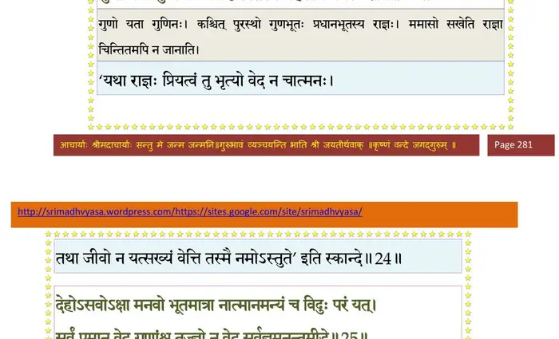
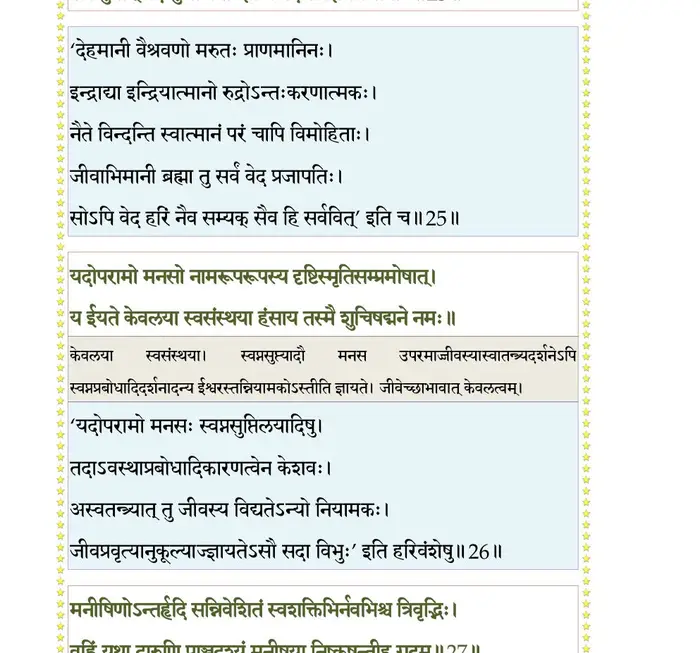
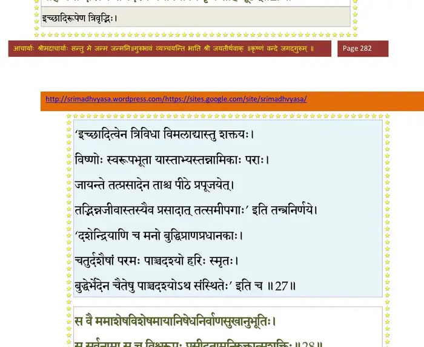
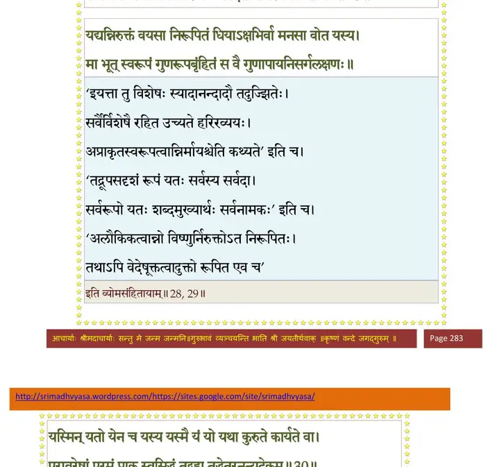
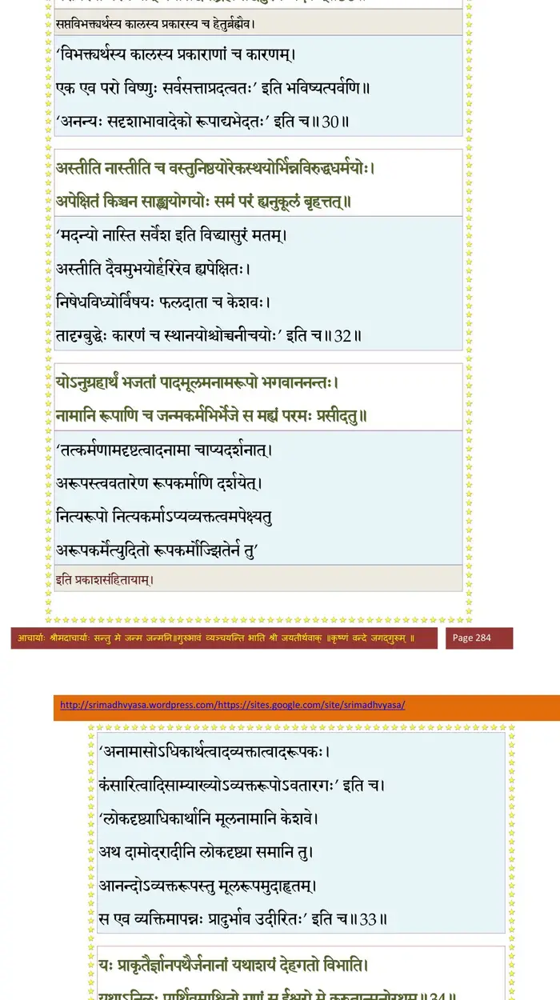
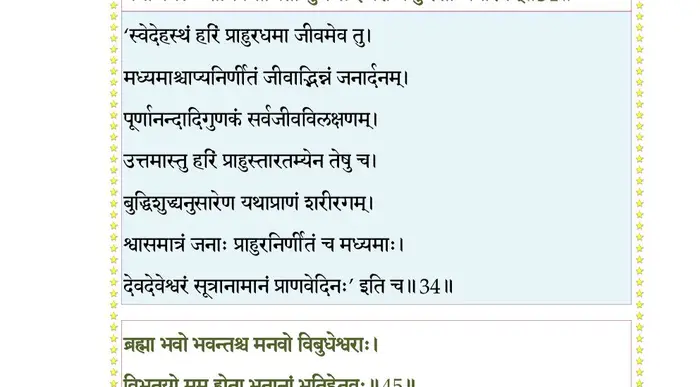
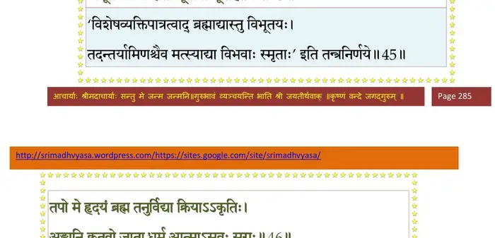
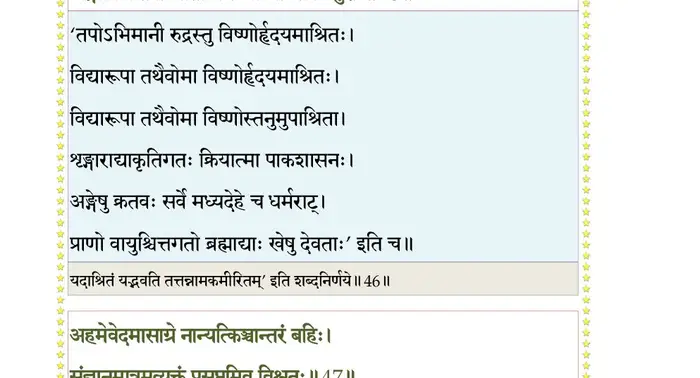
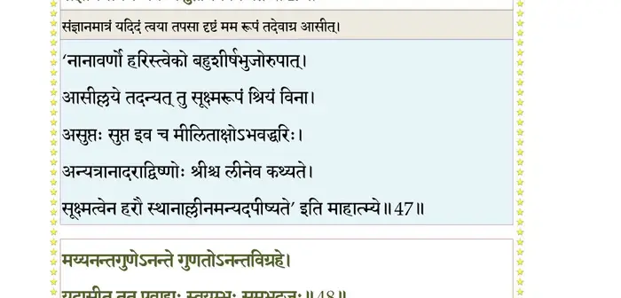
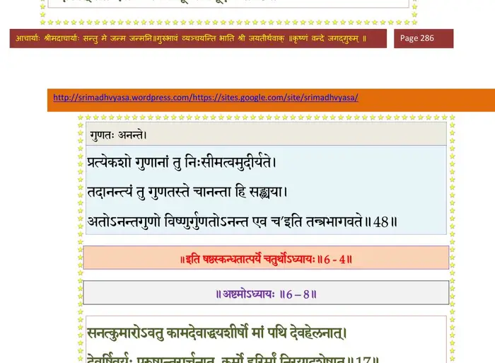

स्कन्ध 6 · अध्याय 4
श्लोक १
राजोवाच–
देवासुरनृणां सर्गो नागानां मृगपक्षिणाम् ।
सामासिकस्त्वया प्रोक्तो यस्तु स्वायम्भुवेऽन्तरे।। १ ।।
देवासुरनृणां सर्गो नागानां मृगपक्षिणाम् ।
सामासिकस्त्वया प्रोक्तो यस्तु स्वायम्भुवेऽन्तरे।। १ ।।
श्लोक २
तस्यैव व्यासमिच्छामि श्रोतुं ते भगवन् यथा ।
अनुसर्गं यथा शक्त्या ससर्ज भगवान् परः ।। २ ।।
अनुसर्गं यथा शक्त्या ससर्ज भगवान् परः ।। २ ।।
श्लोक ३
सूत उवाच–
इति सम्प्रश्नमाकर्ण्य राजर्षेर्बादरायणिः ।
प्रतिनन्द्य महायोगी जगाद मुनिसत्तमाः ।। ३ ।।
इति सम्प्रश्नमाकर्ण्य राजर्षेर्बादरायणिः ।
प्रतिनन्द्य महायोगी जगाद मुनिसत्तमाः ।। ३ ।।
श्लोक ४
ऋषिरुवाच–
यदा प्रचेतसः पुत्रा दश प्राचीनबर्हिषः ।
अन्तस्समुद्रादुन्मग्ना ददृशुर्गां द्रुमैर्वृताम् ।। ४ ।।
यदा प्रचेतसः पुत्रा दश प्राचीनबर्हिषः ।
अन्तस्समुद्रादुन्मग्ना ददृशुर्गां द्रुमैर्वृताम् ।। ४ ।।
श्लोक ५
द्रुमेभ्यः क्रुध्द्यमानास्ते तपोदीपितमन्यवः ।
मुखतो वायुमग्निं च ससृजुस्तद्दिधक्षया ।। ५ ।।
मुखतो वायुमग्निं च ससृजुस्तद्दिधक्षया ।। ५ ।।
श्लोक ६
ताभ्यां निर्दह्यमानांस्तानुपलभ्य कुरूद्वह ।
राजोवाच महान् सोमो मन्युं प्रशमयन्निव।। ६ ।।
राजोवाच महान् सोमो मन्युं प्रशमयन्निव।। ६ ।।
श्लोक ७
मा द्रुमेभ्यो महाभागा दीनेभ्यो द्रोग्धुमर्हथ ।
विवर्धयिषवो यूयं प्रजानां पतयः स्मृताः ।। ७ ।।
विवर्धयिषवो यूयं प्रजानां पतयः स्मृताः ।। ७ ।।
श्लोक ८
आदौ प्रजापतिपतिर्भगवान् हरिरव्ययः ।
वनस्पतीनोषधीश्च ससर्जोर्जमिषं विभुः।। ८ ।।
वनस्पतीनोषधीश्च ससर्जोर्जमिषं विभुः।। ८ ।।
श्लोक ९
अन्नं चराणामचरा ह्यपादः पादचारिणाम् ।
अहस्ता हस्तयुक्तानां द्विपदां च चतुष्पदः।। ९ ।।
अहस्ता हस्तयुक्तानां द्विपदां च चतुष्पदः।। ९ ।।
श्लोक १०
यूयं च पित्राऽन्वादिष्टा देवदेवेन चानघाः ।
प्रजासर्गाय हि कथं वृक्षान् निर्दग्धुमर्हथ ।। १० ।।
प्रजासर्गाय हि कथं वृक्षान् निर्दग्धुमर्हथ ।। १० ।।
श्लोक ११
आतिष्ठत सतां मार्गं कोपं यच्छत दीपितम् ।
पित्रा पितामहेनापि जुष्टं वः प्रपितामहैः ।। ११ ।।
पित्रा पितामहेनापि जुष्टं वः प्रपितामहैः ।। ११ ।।
श्लोक १२
तोकानां पितरौ बन्धू दृशः पक्ष्म स्त्रियः पतिः ।
नृपः प्रजानां भिक्षूणां गृह्यज्ञानां बुधः सुहृत् ।। १२ ।।
नृपः प्रजानां भिक्षूणां गृह्यज्ञानां बुधः सुहृत् ।। १२ ।।
श्लोक १३
अन्तर्देहेषु भूतानामात्माऽऽस्ते हरिरीश्वरः ।
सर्वं तद्धिष्ण्यमीक्षध्वमेवं वस्तोषितो ह्यसौ।। १३ ।।
सर्वं तद्धिष्ण्यमीक्षध्वमेवं वस्तोषितो ह्यसौ।। १३ ।।
श्लोक १४
यः समुत्पतितं देह आकाशान्मन्युमुल्बणम् ।
आत्मजिज्ञासया यच्छेत् सगुणानतिवर्तते ।। १४ ।।
आत्मजिज्ञासया यच्छेत् सगुणानतिवर्तते ।। १४ ।।
श्लोक १५
अलं दग्धैद्रुमैर्दीनैः शेषाणां शिवमस्तु वः ।
वार्क्षी ह्येषा वरा कन्या पत्नीत्वे प्रतिगृह्यताम् ।। १५ ।।
वार्क्षी ह्येषा वरा कन्या पत्नीत्वे प्रतिगृह्यताम् ।। १५ ।।
श्लोक १६
इत्यामन्त्र्य वरारोहां कन्यामाप्सरसीं नृप ।
सोमो राजा ययौ दत्वा ते धर्मेणोपयेमिरे ।। १६ ।।
सोमो राजा ययौ दत्वा ते धर्मेणोपयेमिरे ।। १६ ।।
श्लोक १७
तेभ्यस्तस्यामभूद् राजन् दक्षः प्राचेतसः किल ।
यस्य प्रजाविसर्गेण लोका आपूरितास्त्रयः ।। १७ ।।
यस्य प्रजाविसर्गेण लोका आपूरितास्त्रयः ।। १७ ।।
श्लोक १८
यथा ससर्ज भूतानि दक्षो दुहितृवत्सलः ।
रेतसा मनसा चैव तन्ममावहितः शृृणु।। १८ ।।
रेतसा मनसा चैव तन्ममावहितः शृृणु।। १८ ।।
श्लोक १९
मनसैवासृजत् पूर्वं प्रजापतिरिमाः प्रजाः ।
देवासुरमनुष्यादीन् नभःस्थलजलौकसः ।। १९ ।।
देवासुरमनुष्यादीन् नभःस्थलजलौकसः ।। १९ ।।
श्लोक २०
तमबृंहितमालोक्य प्रजासर्गं प्रजापतिः ।
विन्ध्यपादानुपव्रज्य सोऽचरद् दुश्चरं तपः।। २० ।।
विन्ध्यपादानुपव्रज्य सोऽचरद् दुश्चरं तपः।। २० ।।
श्लोक २१
तत्राघमर्षणं नाम तीर्थं पापहरं परम् ।
उपस्पृश्यानुसवनं तपसाऽतोषयद्धरिम् ।। २१ ।।
उपस्पृश्यानुसवनं तपसाऽतोषयद्धरिम् ।। २१ ।।
श्लोक २२
अस्तौषीद् हंसगुह्येन भगवन्तमधोक्षजम् ।
तुभ्यं तदभिधास्यामि कस्यातुष्यद्यतो हरिः ।। २२ ।।
तुभ्यं तदभिधास्यामि कस्यातुष्यद्यतो हरिः ।। २२ ।।
श्लोक २३
प्रजापतिरुवाच–
नमः परायावितथानुभूतये गुणत्रयाभासनिमित्तबन्धवे ।
अदृष्टधाम्ने गुणतत्त्वबुद्धिभिर्निवृत्तमानावधये स्वयम्भुवे।। २३ ।।
नमः परायावितथानुभूतये गुणत्रयाभासनिमित्तबन्धवे ।
अदृष्टधाम्ने गुणतत्त्वबुद्धिभिर्निवृत्तमानावधये स्वयम्भुवे।। २३ ।।
श्लोक २४
न यस्य सख्यं पुरुषो वेत्ति सख्युः सखा वसन् संवसतः पुरेऽस्मिन् ।
गुणो यथा गुणिनोऽव्यक्तदृष्टिस्तस्मै महेशाय नमस्करोमि।। २४ ।।
गुणो यथा गुणिनोऽव्यक्तदृष्टिस्तस्मै महेशाय नमस्करोमि।। २४ ।।
भागवततात्पर्यनिर्णय

श्लोक २५
देहोऽसवोऽक्षा मन(सो)वो भूतमात्रा नात्मानमन्यं च विदुः परं यत् ।
सर्वं पुमान् वेद गुणांश्च तज्ज्ञो न वेद सर्वज्ञमनन्तमीडे।। २५ ।।
सर्वं पुमान् वेद गुणांश्च तज्ज्ञो न वेद सर्वज्ञमनन्तमीडे।। २५ ।।
भागवततात्पर्यनिर्णय

श्लोक २६
यदोपरामो मनसो नामरूपरूपस्य दृष्टिस्मृतिसंप्रमोषात् ।
य ईयते केवलया स्वसंस्थया हंसाय तस्मै शुचिसद्मने नमः।।२६।।
य ईयते केवलया स्वसंस्थया हंसाय तस्मै शुचिसद्मने नमः।।२६।।
श्लोक २७
मनीषिणोऽन्तर्हृदि सन्निवेशितं स्वशक्तिभिर्नवभिश्च त्रिवृद्भिः ।
वह्निं यथा दारुणि पाञ्चदश्यं मनीषया निष्कृषन्तीह गूढम्।।२७।।
वह्निं यथा दारुणि पाञ्चदश्यं मनीषया निष्कृषन्तीह गूढम्।।२७।।
भागवततात्पर्यनिर्णय

श्लोक २८
स वै ममाशेषविशेषमायानिषेधनिर्वाणसुखानुभूतिः ।
स सर्वनामा स च विश्वरूपः प्रसीदतामनिरुक्तात्मशक्तिः।। २८ ।।
स सर्वनामा स च विश्वरूपः प्रसीदतामनिरुक्तात्मशक्तिः।। २८ ।।
भागवततात्पर्यनिर्णय

श्लोक २९
यद्यन्निरुक्तं वचसा निरूपितं धियाऽक्षिभिर्वा मनसा वोत यस्य ।
मा भूत् स्वरूपं गुणरूपबृंहितं स वै गुणापायनिसर्गलक्षणः।।२९।।
मा भूत् स्वरूपं गुणरूपबृंहितं स वै गुणापायनिसर्गलक्षणः।।२९।।
श्लोक ३०
यस्मिन् यतो येन च यस्य यस्मै यं यो यथा कुरुते कार्यते वा ।
परावरेषां परमं प्राक् स्वसिद्धं तद् ब्रह्म तद्धेतुरनन्यदेकम्।। ३० ।।
परावरेषां परमं प्राक् स्वसिद्धं तद् ब्रह्म तद्धेतुरनन्यदेकम्।। ३० ।।
भागवततात्पर्यनिर्णय

श्लोक ३१
यच्छक्तयो वदतां वादिनां वै विवादसंवादभुवो भवन्ति ।
कुर्वन्ति तेषां मुहुरात्ममोहं तस्मै नमोऽनन्तगुणाय भूम्ने।। ३१ ।।
कुर्वन्ति तेषां मुहुरात्ममोहं तस्मै नमोऽनन्तगुणाय भूम्ने।। ३१ ।।
श्लोक ३२
अस्तीति नास्तीति च वस्तुनिष्ठयोरेकस्थयोर्भिन्नविरुद्धधर्मयोः ।
अपेक्षितं किञ्चन सांख्ययोगयोः समं परं ह्यनुकूलं बृहत् तत्।।३२।।
अपेक्षितं किञ्चन सांख्ययोगयोः समं परं ह्यनुकूलं बृहत् तत्।।३२।।
श्लोक ३३
योऽनुग्रहार्थं भजतां पादमूलमनामरूपो भगवाननन्तः ।
नामानि रूपाणि च जन्मकर्मभिर्भेजे स मह्यं परमः प्रसीदताम्।। ३३ ।।
नामानि रूपाणि च जन्मकर्मभिर्भेजे स मह्यं परमः प्रसीदताम्।। ३३ ।।
श्लोक ३४
यः प्राकृतैर्ज्ञानपथैर्जनानां यथाशयं देहगतो विभाति ।
यथाऽनिलः पार्थिवमाश्रितो गुणं स ईश्वरो मे कुरुतान्मनोरथम् ।। ३४ ।।
यथाऽनिलः पार्थिवमाश्रितो गुणं स ईश्वरो मे कुरुतान्मनोरथम् ।। ३४ ।।
भागवततात्पर्यनिर्णय

श्लोक ३५
श्रीशुक उवाच–
इति स्तवैः संस्तुवतः स तस्मिन्नघमर्षणे ।
प्रादुरासीत् कुरुश्रेष्ठ भगवान् भक्तवत्सलः।। ३५ ।।
इति स्तवैः संस्तुवतः स तस्मिन्नघमर्षणे ।
प्रादुरासीत् कुरुश्रेष्ठ भगवान् भक्तवत्सलः।। ३५ ।।
श्लोक ३६
कृतपादः सुपर्णांसे प्रलम्बाष्टमहाभुजः ।
शङ्खचक्रासिचर्मेषुधनुःपाशगदाधरः।। ३६ ।।
शङ्खचक्रासिचर्मेषुधनुःपाशगदाधरः।। ३६ ।।
श्लोक ३७
पीतवासा घनश्यामः प्रसन्नवदनेक्षणः ।
वनमालानिवीताङ्गो लसच्छ्रीवत्सकौस्तुभः।। ३७ ।।
वनमालानिवीताङ्गो लसच्छ्रीवत्सकौस्तुभः।। ३७ ।।
श्लोक ३८
महाकिरीटकटकस्फुरन्मकरकुण्डलः ।
काञ्च््यङ्गुलीयवलयनूपुराङ्गदभूषितः।। ३८ ।।
काञ्च््यङ्गुलीयवलयनूपुराङ्गदभूषितः।। ३८ ।।
श्लोक ३९
त्रैलोक्यमोहनं रूपं बिभ्रत् त्रिभुवनेश्वरः ।
वृतो नारदनन्दाद्यैः पार्षदैः सुरयूथपैः।। ३९ ।।
वृतो नारदनन्दाद्यैः पार्षदैः सुरयूथपैः।। ३९ ।।
श्लोक ४०
स्तूयमानोऽनुगायद्भिः सिद्धगन्धर्वचारणैः ।
रूपं तन्महदाश्चर्यं विलक्ष्यागतसाध्वसः ।
ननाम दण्डवद् भूमौ प्रहृष्टात्मा प्रजापतिः।। ४० ।।
रूपं तन्महदाश्चर्यं विलक्ष्यागतसाध्वसः ।
ननाम दण्डवद् भूमौ प्रहृष्टात्मा प्रजापतिः।। ४० ।।
श्लोक ४१
न किञ्चनोदीरयितुमशकत् तीव्रया मुदा ।
आपूरितमनोद्वारो ह्रदिन्य इव निर्झरैः।। ४१ ।।
आपूरितमनोद्वारो ह्रदिन्य इव निर्झरैः।। ४१ ।।
श्लोक ४२
तं तथाऽवनतं भक्तं प्रजाकामं प्रजापतिम् ।
चित्तज्ञः सर्वभूतानामिदमाह जनार्दनः।। ४२ ।।
चित्तज्ञः सर्वभूतानामिदमाह जनार्दनः।। ४२ ।।
श्लोक ४३
श्रीभगवानुवाच–
प्राचेतस महाभाग संसिद्धस्तपसा भवान् ।
यच्छ्रद्धया मत्परया मयि भावं परं गतः।। ४३ ।।
प्राचेतस महाभाग संसिद्धस्तपसा भवान् ।
यच्छ्रद्धया मत्परया मयि भावं परं गतः।। ४३ ।।
श्लोक ४४
प्रीतोऽहं ते प्रजानाथ यत्ते स्याद्बृंहणं तपः ।
ममैष कामो भूतानां यद् भूयासुर्विभूतयः।। ४४ ।।
ममैष कामो भूतानां यद् भूयासुर्विभूतयः।। ४४ ।।
श्लोक ४५
ब्रह्मा भवो भवन्तश्च मनवो विबुधेश्वराः ।
विभूतयो मम ह्येता भूतानां भूतिहेतवः।। ४५ ।।
विभूतयो मम ह्येता भूतानां भूतिहेतवः।। ४५ ।।
भागवततात्पर्यनिर्णय

श्लोक ४६
तपो मे हृदयं ब्रह्म तनुर्विद्या क्रियाऽऽकृतिः ।
अङ्गानि क्रतवो जाता धर्म आत्माऽसवः सुराः।। ४६ ।।
अङ्गानि क्रतवो जाता धर्म आत्माऽसवः सुराः।। ४६ ।।
भागवततात्पर्यनिर्णय

श्लोक ४७
अहमेवेदमासाग्रे नान्यत् किञ्चान्तरं बहिः ।
सञ्ज्ञानमात्रमव्यक्तं प्रसुप्तमिव विश्वतः।। ४७ ।।
सञ्ज्ञानमात्रमव्यक्तं प्रसुप्तमिव विश्वतः।। ४७ ।।
भागवततात्पर्यनिर्णय

श्लोक ४८
मय्यनन्तगुणेऽनन्ते गुणतोऽनन्तविग्रहे ।
यदासीत् तत एवाद्यः स्वयम्भूः समभूदजः।। ४८ ।।
यदासीत् तत एवाद्यः स्वयम्भूः समभूदजः।। ४८ ।।
भागवततात्पर्यनिर्णय

श्लोक ४९
स वै यदा महादेवो मम वीर्योपबृंहितः ।
मेनेऽकल्पमिवात्मानमुद्यतः सर्गकर्मणि।। ४९ ।।
मेनेऽकल्पमिवात्मानमुद्यतः सर्गकर्मणि।। ४९ ।।
श्लोक ५०
अथ मेऽभिहितो देवस्तपोऽतप्यत दारुणम् ।
नव विश्वसृजो युष्मान् येनादावसृजद् विभुः।। ५० ।।
नव विश्वसृजो युष्मान् येनादावसृजद् विभुः।। ५० ।।
श्लोक ५१
एषा पञ्चजनस्याङ्ग दुहिता वै प्रजापतेः ।
असिक्नी नाम पत्नीत्वे प्रजेश प्रतिगृह्यताम्।। ५१ ।।
असिक्नी नाम पत्नीत्वे प्रजेश प्रतिगृह्यताम्।। ५१ ।।
श्लोक ५२
मिथुनव्यवायधर्मस्त्वं प्रजासर्गमिमं पुनः ।
मिथुनव्यवायधर्मिण्यां भूरिशो भावयिष्यसि।। ५२ ।।
मिथुनव्यवायधर्मिण्यां भूरिशो भावयिष्यसि।। ५२ ।।
श्लोक ५३
त्वत्तोऽधस्तात् प्रजाः सर्वा मिथुनीभूय मायया ।
मदीयया भविष्यन्ति हरिष्यन्ति च मे बलिम्।। ५३ ।।
मदीयया भविष्यन्ति हरिष्यन्ति च मे बलिम्।। ५३ ।।
श्लोक ५४
इत्युक्त्वा मिषतस्तस्य भगवान् विश्वभावनः ।
स्वप्नोपलब्धार्थ इव तत्रैवान्तर्दधे हरिः।। ५४ ।।
स्वप्नोपलब्धार्थ इव तत्रैवान्तर्दधे हरिः।। ५४ ।।
।। इति श्रीमद्भागवते षष्ठस्कन्धे चतुर्थोऽध्यायः ।।